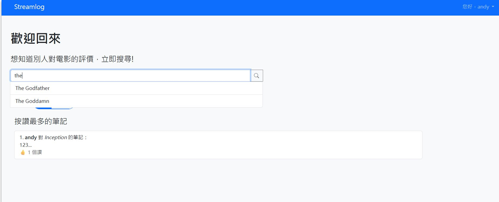
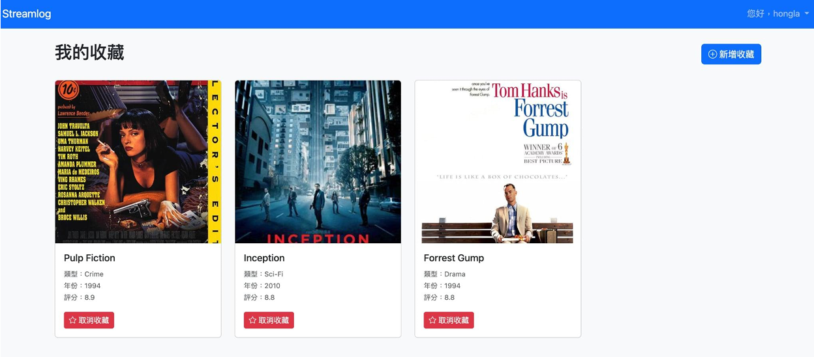
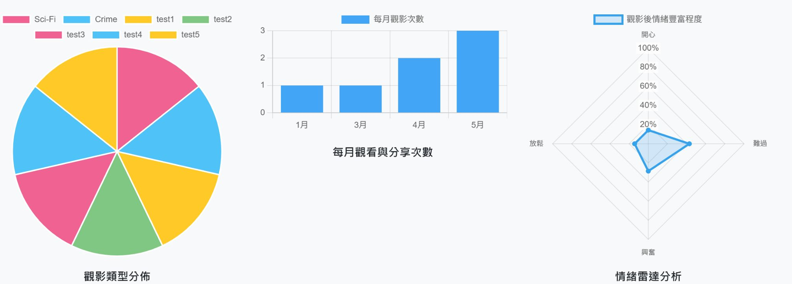

PROJECT CASE STUDY
Streamlog Movie Journal and Sharing Platform
A full-stack application that helps users record movie experiences, share notes, search watch history, and generate annual movie-review insights.
System Architecture
Streamlog follows a straightforward web architecture:
- Client: HTML + Bootstrap pages for form operations and queries
- Web Server: Flask handles routing, business logic, and template rendering
- Database: MySQL stores user, movie, watchlog, and note-related entities
- Chart Layer: Aggregated yearly data is transformed into visual and statistical summaries
Development flow uses Poetry-managed backend dependencies and local MySQL initialization via schema SQL.
Core Data Model
The platform data model is designed around movie tracking, note sharing, and user interactions.
- User: profile/auth info (user_name, email, password, age)
- Movie: title metadata (genre, duration, release year, rating, image URL)
- WatchLog: user-to-movie viewing records with mood and rating
- UserNote: long-form review content with created timestamp
- NoteLike / MovieFavorite: interaction and preference mapping tables
Core Product Features
-
User Flow
Register, login, logout, and session-based authenticated navigation.
-
Movie Journaling
Create and manage watch logs and movie notes through CRUD-style pages.
-
Discovery and Sharing
Search records and surface popular notes through like and interaction signals.
-
Annual Review
Generate yearly summaries from user watch history and behavior data.
Interface Snapshots



My Contribution: Annual Review Analytics
I implemented the annual review feature, which aggregates a user's watch logs by year and turns them into clear summary metrics and visualized trends.
The report highlights total watched movies, most-watched genres, total watch time, and average rating. For example, for one yearly query the output showed 42 watched movies, about 1200 total minutes, and a 4.2/5 average rating.